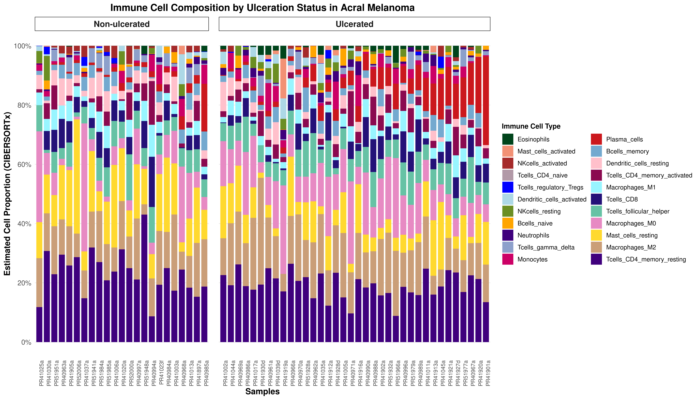
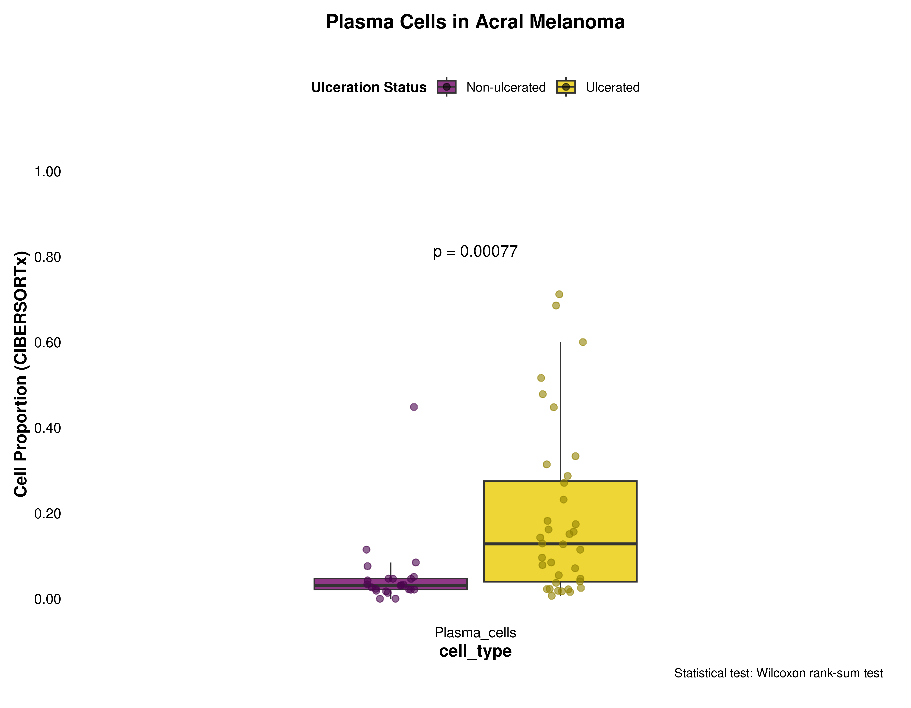
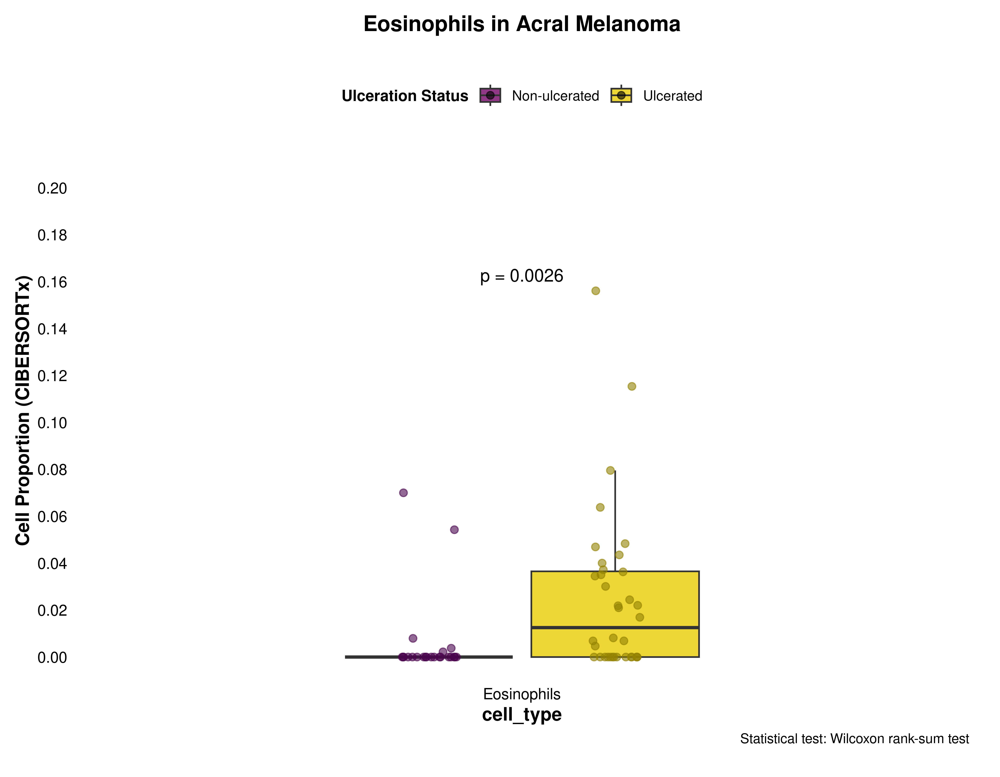
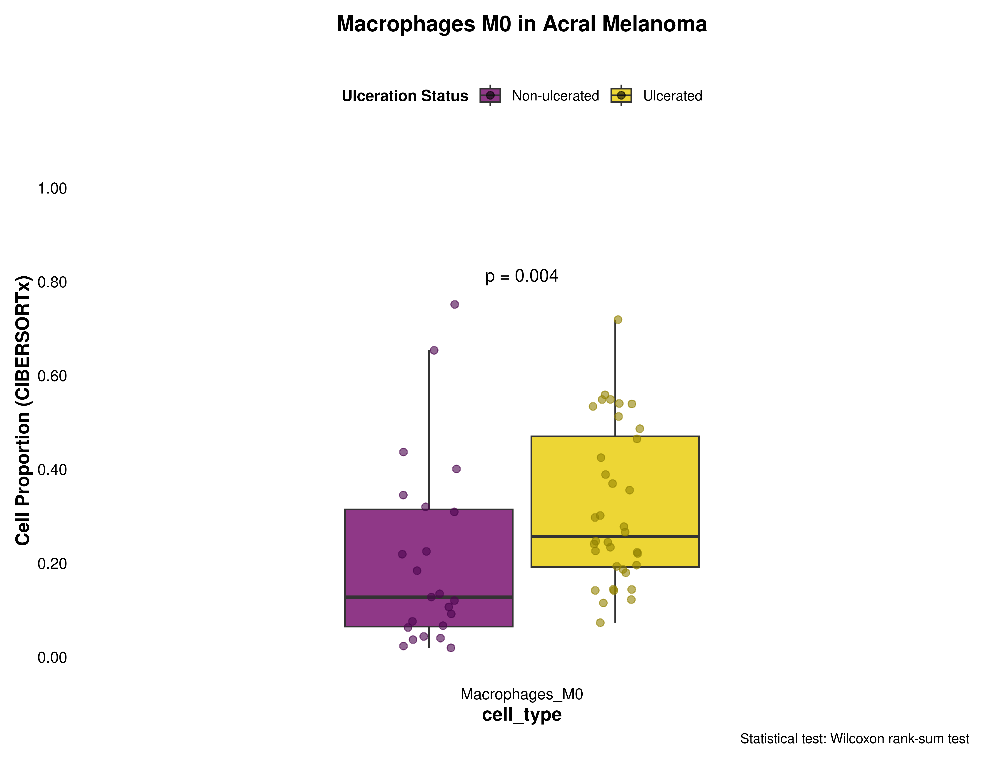

Last updated: 2025-05-05
Checks: 7 0
Knit directory: Ulceration_paper_github/
This reproducible R Markdown analysis was created with workflowr (version 1.7.1). The Checks tab describes the reproducibility checks that were applied when the results were created. The Past versions tab lists the development history.
Great! Since the R Markdown file has been committed to the Git repository, you know the exact version of the code that produced these results.
Great job! The global environment was empty. Objects defined in the global environment can affect the analysis in your R Markdown file in unknown ways. For reproduciblity it’s best to always run the code in an empty environment.
The command set.seed(20250330) was run prior to running
the code in the R Markdown file. Setting a seed ensures that any results
that rely on randomness, e.g. subsampling or permutations, are
reproducible.
Great job! Recording the operating system, R version, and package versions is critical for reproducibility.
Nice! There were no cached chunks for this analysis, so you can be confident that you successfully produced the results during this run.
Great job! Using relative paths to the files within your workflowr project makes it easier to run your code on other machines.
Great! You are using Git for version control. Tracking code development and connecting the code version to the results is critical for reproducibility.
The results in this page were generated with repository version 6cb2a25. See the Past versions tab to see a history of the changes made to the R Markdown and HTML files.
Note that you need to be careful to ensure that all relevant files for
the analysis have been committed to Git prior to generating the results
(you can use wflow_publish or
wflow_git_commit). workflowr only checks the R Markdown
file, but you know if there are other scripts or data files that it
depends on. Below is the status of the Git repository when the results
were generated:
Ignored files:
Ignored: .Rproj.user/
Ignored: data/cibersort_res_ulc.rds
Ignored: data/cibersort_res_ulc_lf.rds
Ignored: omnipathr-log/
Ignored: output/ulceration_combined_panel.pdf
Untracked files:
Untracked: .Rhistory
Untracked: volcanoplot.pdf
Unstaged changes:
Modified: .gitignore
Note that any generated files, e.g. HTML, png, CSS, etc., are not included in this status report because it is ok for generated content to have uncommitted changes.
These are the previous versions of the repository in which changes were
made to the R Markdown (analysis/figure3_deconvolution.Rmd)
and HTML (docs/figure3_deconvolution.html) files. If you’ve
configured a remote Git repository (see ?wflow_git_remote),
click on the hyperlinks in the table below to view the files as they
were in that past version.
| File | Version | Author | Date | Message |
|---|---|---|---|---|
| html | 60dfca2 | Estef Vazquez | 2025-05-05 | Build site. |
| Rmd | cb08ced | Estef Vazquez | 2025-05-05 | Loading deconv |
# Load required libraries
library(tidyverse)
library(ggplot2)
library(forcats)
library(ggpubr)
library(here)
# Load results
cibersort <- readRDS(here("data", "cibersort_res_ulc_lf.rds"))
# Load combined data with ulceration status
ciber_with_groups <- readRDS(here("data", "cibersort_res_ulc.rds"))
# Gather - long format
ciber_gath <- ciber_with_groups %>%
pivot_longer(
cols = -c(sample_id, ulceration),
names_to = "cell_type",
values_to = "proportion"
)
# Order cells by proportion
ciber_gath <- ciber_gath %>% mutate(cell_type = fct_reorder(cell_type, proportion))
# Order by plasma cell proportion within each group
sample_order <- ciber_gath %>%
filter(cell_type == "Plasma_cells") %>%
arrange(ulceration, proportion) %>%
pull(sample_id)
# Set sample_id as factor with the new order
ciber_ordered <- ciber_gath %>%
mutate(sample_id = factor(sample_id, levels = sample_order))##Color Palettes
# Color palette for cell types
immune_palette <- c(
'#00441B', '#f29175', 'brown', '#B299A7', 'blue', 'lightblue', 'olivedrab', 'orange',
'#3F007D', '#8DA0CB', '#CC0066', "#CB181D", '#74a9cf', 'pink', 'deeppink4', 'cadetblue1',
'#241178', '#66C2A5', "#E78AC3", "#FFD92F", "#CA9E78", "#3F007D"
)
# Define colors
ulceration_colors <- list(
fill = c("0" = "#730769", "1" = "#E8CC03"),
point = c("0" = "#4A044E", "1" = "#938202")
)
# Set theme
publication_theme <- theme_minimal() +
theme(
plot.title = element_text(size = 14, face = "bold", hjust = 0.5, margin = margin(b = 20)),
axis.title = element_text(size = 12, face = "bold"),
axis.text = element_text(size = 10, color = "black"),
legend.position = "top",
legend.title = element_text(size = 10, face = "bold"),
legend.text = element_text(size = 9),
legend.margin = margin(t = 10, b = 10),
panel.grid = element_blank(),
plot.margin = margin(10, 20, 20, 10)
)# Transform wide data to long format
prepare_long_format <- function(data) {
# Check if data already contains cell_type and proportion columns
if("cell_type" %in% colnames(data) && "proportion" %in% colnames(data)) {
return(data) # Already in long format
}
# Check if ulceration column exists
if("ulceration" %in% colnames(data)) {
# Transform wide to long, preserving ulceration
data %>% pivot_longer(
cols = -c(sample_id, ulceration),
names_to = "cell_type",
values_to = "proportion"
)
} else {
# Transform wide to long without ulceration
data %>% pivot_longer(
cols = -sample_id,
names_to = "cell_type",
values_to = "proportion"
)
}
}
# Order samples by cell type proportion
order_samples <- function(data, order_by_cell = "Plasma_cells", group_by = NULL) {
# Ensure data is in long format
data_long <- prepare_long_format(data)
# Filter for specified cell type
cell_data <- data_long %>% filter(cell_type == order_by_cell)
# Order samples differently based on whether grouping is needed
if(!is.null(group_by) && group_by %in% colnames(data_long)) {
# Order within groups
sample_order <- cell_data %>%
arrange(!!sym(group_by), proportion) %>%
pull(sample_id)
} else {
# Order overall
sample_order <- cell_data %>%
arrange(proportion) %>%
pull(sample_id)
}
# Return the original data with ordered sample_id
data_long %>% mutate(sample_id = factor(sample_id, levels = sample_order))
}
# Function to prepare data for comparison of single cell types
prepare_cell_data <- function(data, cell_column) {
# Select only required columns
data %>%
select(sample_id, !!sym(cell_column), ulceration) %>%
gather(key = "cell_type", value = "proportion", -sample_id, -ulceration)
}# Function to create grouped stacked barplot by ulceration status
plot_grouped_barplot <- function(data, title = "Immune Cell Composition by Ulceration Status") {
# Ensure data is in long format and ordered
if(!("ulceration" %in% colnames(data))) {
stop("Data must contain 'ulceration' column for grouped barplot")
}
ggplot(data, aes(x = sample_id, y = proportion, fill = cell_type)) +
geom_col(position = "fill", width = 0.8) +
scale_fill_manual(values = immune_palette) +
scale_y_continuous(labels = scales::percent, breaks = seq(0, 1, 0.2)) +
facet_grid(~ ulceration, scales = "free_x", space = "free_x",
labeller = labeller(ulceration = c("0" = "Non-ulcerated", "1" = "Ulcerated"))) +
labs(
title = title,
x = "Samples",
y = "Estimated Cell Proportion (CIBERSORTx)",
fill = "Immune Cell Type"
) +
theme_minimal() +
theme(
plot.title = element_text(size = 14, face = "bold", hjust = 0.5),
plot.subtitle = element_text(size = 12, hjust = 0.5),
axis.text.x = element_text(angle = 90, hjust = 1, size = 8),
axis.text.y = element_text(size = 10),
axis.title = element_text(size = 12, face = "bold"),
legend.title = element_text(size = 10, face = "bold"),
legend.text = element_text(size = 9),
panel.grid.major.x = element_blank(),
panel.grid.minor = element_blank(),
strip.text = element_text(size = 12, face = "bold"), # Group label formatting
strip.background = element_rect(fill = "white"),
panel.spacing = unit(1, "lines") # Space between groups
)
}
# Comparative boxplot for cell types
plot_cell_boxplot <- function(
data,
cell_name,
y_max = NULL,
y_increment = NULL
) {
if(is.null(y_max)) {
y_max <- ceiling(max(data$proportion) * 1.2 * 100) / 100
}
if(is.null(y_increment)) {
y_increment <- y_max / 5
}
stat_pos <- y_max * 0.8
ggplot(data, aes(x = cell_type, y = proportion, fill = ulceration)) +
# Boxplot layer
geom_boxplot(
outlier.shape = NA,
width = 0.5,
alpha = 0.8
) +
# Points layer with jitter
geom_point(
aes(color = ulceration),
size = 2,
alpha = 0.6,
position = position_jitterdodge(
jitter.width = 0.15,
dodge.width = 0.5,
seed = 123
)
) +
# Colors
scale_fill_manual(
values = ulceration_colors$fill,
name = "Ulceration Status",
labels = c("0" = "Non-ulcerated", "1" = "Ulcerated")
) +
scale_color_manual(
values = ulceration_colors$point,
guide = "none"
) +
# Y-axis
scale_y_continuous(
limits = c(0, y_max),
breaks = seq(0, y_max, by = y_increment),
labels = scales::number_format(accuracy = 0.01),
expand = expansion(mult = c(0.05, 0.1))
) +
# Statistical test
stat_compare_means(
aes(group = ulceration),
label.y = stat_pos,
size = 4,
label = "p.format",
label.x.npc = "center"
) +
# Labels
labs(
title = paste0(cell_name, " in Acral Melanoma"),
y = "Cell Proportion (CIBERSORTx)",
caption = "Statistical test: Wilcoxon rank-sum test"
) +
# Apply theme
publication_theme +
theme(axis.text.x = element_text(angle = 0, hjust = 0.5))
}# Create grouped barplot
plot_grouped_barplot(
ciber_ordered,
title = "Immune Cell Composition by Ulceration Status in Acral Melanoma"
)
| Version | Author | Date |
|---|---|---|
| 60dfca2 | Estef Vazquez | 2025-05-05 |
plasma_data <- prepare_cell_data(ciber_with_groups, "Plasma_cells")
plot_cell_boxplot(
plasma_data,
"Plasma Cells",
y_max = 1,
y_increment = 0.2
)
| Version | Author | Date |
|---|---|---|
| 60dfca2 | Estef Vazquez | 2025-05-05 |
eosinophils_data <- prepare_cell_data(ciber_with_groups, "Eosinophils")
plot_cell_boxplot(
eosinophils_data,
"Eosinophils",
y_max = 0.2,
y_increment = 0.02
)
| Version | Author | Date |
|---|---|---|
| 60dfca2 | Estef Vazquez | 2025-05-05 |
macrophages_m0_data <- prepare_cell_data(ciber_with_groups, "Macrophages_M0")
plot_cell_boxplot(
macrophages_m0_data,
"Macrophages M0",
y_max = 1,
y_increment = 0.2
)
| Version | Author | Date |
|---|---|---|
| 60dfca2 | Estef Vazquez | 2025-05-05 |
sessionInfo()R version 4.4.0 (2024-04-24)
Platform: x86_64-pc-linux-gnu
Running under: Ubuntu 22.04.4 LTS
Matrix products: default
BLAS: /usr/lib/x86_64-linux-gnu/blas/libblas.so.3.10.0
LAPACK: /usr/lib/x86_64-linux-gnu/lapack/liblapack.so.3.10.0
locale:
[1] LC_CTYPE=en_US.UTF-8 LC_NUMERIC=C
[3] LC_TIME=es_MX.UTF-8 LC_COLLATE=en_US.UTF-8
[5] LC_MONETARY=es_MX.UTF-8 LC_MESSAGES=en_US.UTF-8
[7] LC_PAPER=es_MX.UTF-8 LC_NAME=C
[9] LC_ADDRESS=C LC_TELEPHONE=C
[11] LC_MEASUREMENT=es_MX.UTF-8 LC_IDENTIFICATION=C
time zone: America/Mexico_City
tzcode source: system (glibc)
attached base packages:
[1] stats graphics grDevices utils datasets methods base
other attached packages:
[1] here_1.0.1 ggpubr_0.6.0 lubridate_1.9.4 forcats_1.0.0
[5] stringr_1.5.1 dplyr_1.1.4 purrr_1.0.2 readr_2.1.5
[9] tidyr_1.3.1 tibble_3.2.1 ggplot2_3.5.1 tidyverse_2.0.0
[13] workflowr_1.7.1
loaded via a namespace (and not attached):
[1] gtable_0.3.6 xfun_0.49 bslib_0.8.0 processx_3.8.4
[5] rstatix_0.7.2 callr_3.7.6 tzdb_0.4.0 vctrs_0.6.5
[9] tools_4.4.0 ps_1.8.1 generics_0.1.3 pkgconfig_2.0.3
[13] lifecycle_1.0.4 compiler_4.4.0 farver_2.1.2 git2r_0.33.0
[17] munsell_0.5.1 getPass_0.2-4 carData_3.0-5 httpuv_1.6.15
[21] htmltools_0.5.8.1 sass_0.4.9 yaml_2.3.10 Formula_1.2-5
[25] later_1.4.1 pillar_1.10.0 car_3.1-3 jquerylib_0.1.4
[29] whisker_0.4.1 cachem_1.1.0 abind_1.4-5 tidyselect_1.2.1
[33] digest_0.6.37 stringi_1.8.4 rprojroot_2.0.4 fastmap_1.2.0
[37] grid_4.4.0 colorspace_2.1-1 cli_3.6.3 magrittr_2.0.3
[41] broom_1.0.7 withr_3.0.2 scales_1.3.0 promises_1.3.2
[45] backports_1.5.0 timechange_0.3.0 rmarkdown_2.29 httr_1.4.7
[49] ggsignif_0.6.4 hms_1.1.3 evaluate_1.0.1 knitr_1.49
[53] rlang_1.1.4 Rcpp_1.0.13-1 glue_1.8.0 rstudioapi_0.17.1
[57] jsonlite_1.8.9 R6_2.5.1 fs_1.6.5
sessionInfo()R version 4.4.0 (2024-04-24)
Platform: x86_64-pc-linux-gnu
Running under: Ubuntu 22.04.4 LTS
Matrix products: default
BLAS: /usr/lib/x86_64-linux-gnu/blas/libblas.so.3.10.0
LAPACK: /usr/lib/x86_64-linux-gnu/lapack/liblapack.so.3.10.0
locale:
[1] LC_CTYPE=en_US.UTF-8 LC_NUMERIC=C
[3] LC_TIME=es_MX.UTF-8 LC_COLLATE=en_US.UTF-8
[5] LC_MONETARY=es_MX.UTF-8 LC_MESSAGES=en_US.UTF-8
[7] LC_PAPER=es_MX.UTF-8 LC_NAME=C
[9] LC_ADDRESS=C LC_TELEPHONE=C
[11] LC_MEASUREMENT=es_MX.UTF-8 LC_IDENTIFICATION=C
time zone: America/Mexico_City
tzcode source: system (glibc)
attached base packages:
[1] stats graphics grDevices utils datasets methods base
other attached packages:
[1] here_1.0.1 ggpubr_0.6.0 lubridate_1.9.4 forcats_1.0.0
[5] stringr_1.5.1 dplyr_1.1.4 purrr_1.0.2 readr_2.1.5
[9] tidyr_1.3.1 tibble_3.2.1 ggplot2_3.5.1 tidyverse_2.0.0
[13] workflowr_1.7.1
loaded via a namespace (and not attached):
[1] gtable_0.3.6 xfun_0.49 bslib_0.8.0 processx_3.8.4
[5] rstatix_0.7.2 callr_3.7.6 tzdb_0.4.0 vctrs_0.6.5
[9] tools_4.4.0 ps_1.8.1 generics_0.1.3 pkgconfig_2.0.3
[13] lifecycle_1.0.4 compiler_4.4.0 farver_2.1.2 git2r_0.33.0
[17] munsell_0.5.1 getPass_0.2-4 carData_3.0-5 httpuv_1.6.15
[21] htmltools_0.5.8.1 sass_0.4.9 yaml_2.3.10 Formula_1.2-5
[25] later_1.4.1 pillar_1.10.0 car_3.1-3 jquerylib_0.1.4
[29] whisker_0.4.1 cachem_1.1.0 abind_1.4-5 tidyselect_1.2.1
[33] digest_0.6.37 stringi_1.8.4 rprojroot_2.0.4 fastmap_1.2.0
[37] grid_4.4.0 colorspace_2.1-1 cli_3.6.3 magrittr_2.0.3
[41] broom_1.0.7 withr_3.0.2 scales_1.3.0 promises_1.3.2
[45] backports_1.5.0 timechange_0.3.0 rmarkdown_2.29 httr_1.4.7
[49] ggsignif_0.6.4 hms_1.1.3 evaluate_1.0.1 knitr_1.49
[53] rlang_1.1.4 Rcpp_1.0.13-1 glue_1.8.0 rstudioapi_0.17.1
[57] jsonlite_1.8.9 R6_2.5.1 fs_1.6.5